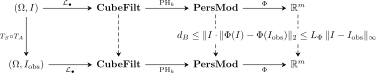

Reliability Engineering with Complementary Probes
Turning a stability bound into a fault-isolation framework
The computational stability bound explains how acquisition error can move a persistence diagram:
\[ d_B\bigl(\operatorname{Dgm}(I),\operatorname{Dgm}(I_{\mathrm{obs}})\bigr) \leq \lceil\lambda\rceil L_I+\varepsilon_{\mathrm{rad}}. \]
A deployed system, however, faces a different question. If performance has deteriorated, is the dominant fault mechanical—alignment, interpolation, resolution, or blur—or radiometric—illumination, response, quantisation, or sensor noise?
The thesis treats this as a reliability-engineering problem, not only as a classification problem. It pairs two deliberately low-dimensional probes whose failure modes are expected to be complementary:
- a geometric probe based on global image moments; and
- a topological probe based on persistence diagrams.
The goal is not to claim that either representation is universally superior. The goal is to make their disagreement informative.
The earlier chapters asked whether a mathematical representation is stable. The question is how two imperfect representations can be used together to identify a likely failure mechanism. The logic is comparative:
- compress each image into a small geometric vector and a small topological vector;
- expose both vectors to controlled perturbations;
- observe which representation loses useful information first; and
- interpret the pattern using the known sensitivities of the two probes.
The phrase control here means a complementary measurement channel, not an untreated group in a clinical trial.
1 From diagrams to vectors
A persistence diagram is a multiset whose cardinality varies from image to image. Standard statistical models expect a vector in a fixed-dimensional Euclidean space. A vectorisation is therefore a map
\[ \Phi\colon(\mathcal D,d_B)\longrightarrow(\mathbb R^m,\|\cdot\|_2). \]
This is also the interface with neural networks. Although an image network can accept a pixel tensor directly, a persistence diagram is an unordered, variable-size collection of birth–death points. It cannot be passed unchanged to an ordinary fixed-input layer. The map \(\Phi\) converts the diagram into a fixed list of numbers that can be used alone, concatenated with learned image features, or supplied as an explicit topological channel.
The purpose is not to replace convolutional features categorically. Convolutions describe local appearance extremely well, while persistent homology explicitly describes multiscale connectivity and loops. The two representations retain different information and can therefore be complementary.
The vectorisation is a new mathematical stage and can destroy stability if it amplifies small diagram changes.
Theorem 1 (Total computational stability after vectorisation) Suppose \(\Phi\) is \(L_\Phi\)-Lipschitz:
\[ \|\Phi(\mathcal D)-\Phi(\mathcal D')\|_2 \leq L_\Phi d_B(\mathcal D,\mathcal D'). \]
Under the Aim-and-Shoot assumptions,
\[ \|\Phi(\operatorname{Dgm}I) -\Phi(\operatorname{Dgm}I_{\mathrm{obs}})\|_2 \leq L_\Phi\bigl(\lceil\lambda\rceil L_I+\varepsilon_{\mathrm{rad}}\bigr). \]
Proof. Apply the Lipschitz inequality for \(\Phi\), then substitute the computational stability bound for the bottleneck distance.

The top and bottom rows perform the same computation on two images. The vertical comparisons are the stability guarantees: acquisition error first bounds the separation between persistence modules and then, after applying \(\Phi\), bounds the Euclidean separation between the numerical feature vectors.
The constant \(L_\Phi\) is an amplification factor. A high-fidelity vectorisation may retain more of the diagram, but its output can be more sensitive. A coarse summary discards information, yet can offer a smaller, more interpretable sensitivity envelope.
2 The geometric control: Hu moments
Image moments are weighted averages of pixel coordinates. Before reading the formulas, it helps to know what the lowest orders mean:
| Moment | Informal meaning |
|---|---|
| \(M_{00}\) | total image mass or total intensity |
| \(M_{10}/M_{00}\) | horizontal centre of mass |
| \(M_{01}/M_{00}\) | vertical centre of mass |
| second- and third-order moments | spread, elongation, and asymmetry |
The indices \(p\) and \(q\) state how strongly horizontal and vertical coordinates are weighted. The construction assumes \(M_{00}\ne0\), as is the case for a nonzero fundus image.
Let \(I\colon\Omega\to\mathbb R\) be an image. Its raw moment of order \((p,q)\) is
\[ M_{pq} = \sum_{(x,y)\in\Omega}x^py^qI(x,y). \]
The centroid is
\[ \bar x=\frac{M_{10}}{M_{00}}, \qquad \bar y=\frac{M_{01}}{M_{00}}. \]
Translation dependence is removed by the central moments
\[ \mu_{pq} = \sum_{(x,y)\in\Omega} (x-\bar x)^p(y-\bar y)^qI(x,y), \]
and scale is normalised by
\[ \eta_{pq} = \frac{\mu_{pq}}{\mu_{00}^{\,1+(p+q)/2}}, \qquad p+q\geq2. \]
Hu’s seven invariants \(\phi_1,\ldots,\phi_7\) are polynomial combinations of the normalised moments through order three (Hu 1962). In the continuous idealisation they are invariant under translation, uniform scale, and rotation. In computation, exact invariance is affected by sampling, interpolation, finite precision, and boundary handling.
The explicit seven polynomials are lengthy and are not needed for the stability comparison. What matters here is their design: centring removes translation, normalisation removes uniform scale, and Hu’s combinations remove ideal continuous rotation. Readers interested primarily in topology may treat the resulting seven numbers as a defined baseline descriptor.
Raw Hu invariants span many orders of magnitude. The thesis uses the stabilised log transform
\[ h_i = -\operatorname{sgn}(\phi_i) \log_{10}(|\phi_i|+\varepsilon), \qquad i=1,\ldots,7. \]
The resulting vector \(\mathbf v_{\mathrm{geo}}\in\mathbb R^7\) is the mechanical control. Its global spatial integration makes it comparatively insensitive to ideal rigid motion, but changes to absolute intensity can alter the mass integrals throughout the image.
Hu moments are not guaranteed to outperform topology under every mechanical perturbation, and persistence is not guaranteed to outperform Hu moments under every radiometric perturbation. The proposed roles are hypotheses about this pipeline under a specified acquisition envelope. They must be tested rather than assumed.
3 The topological control
This construction reuses the diagrams from the preceding chapters. No new homology theory is being introduced; only a fixed-dimensional summary is being chosen.
Each image produces three diagrams:
\[ \mathcal D_0,\qquad \mathcal D_1,\qquad \mathcal D_S, \]
representing sublevel \(H_0\), sublevel \(H_1\), and inverted-image sublevel \(H_0\), respectively. The first two prioritise dark structures; the third prioritises bright structures.
For finite persistences \(p_1\geq p_2\geq\cdots\), define
\[ S_k(\mathcal D)=\sum_{i=1}^kp_i \]
and, for a noise threshold \(\tau\geq0\),
\[ E^\tau_{\mathrm{tot}}(\mathcal D) = \sum_{x\in\mathcal D}\max(0,\operatorname{pers}(x)-\tau). \]
The topological feature vector is
\[ \mathbf v_{\mathrm{topo}} = \begin{pmatrix} S_k(\mathcal D_0)\\ E^\tau_{\mathrm{tot}}(\mathcal D_0)\\ S_k(\mathcal D_1)\\ E^\tau_{\mathrm{tot}}(\mathcal D_1)\\ S_k(\mathcal D_S)\\ E^\tau_{\mathrm{tot}}(\mathcal D_S) \end{pmatrix} \in\mathbb R^6. \]
It deliberately forgets location, orientation, and the detailed geometry of individual features. What remains is the amount of persistent connectivity in three physically interpretable channels.
3.1 Stability of the summaries
Lemma 1 (Top-\(k\) persistence is Lipschitz) If \(d_B(\mathcal D,\mathcal D')\leq\delta\), then
\[ |S_k(\mathcal D)-S_k(\mathcal D')| \leq2k\delta. \]
Proof. Under a bottleneck matching of cost at most \(\delta\), matched birth and death coordinates each move by at most \(\delta\). Thus matched persistences differ by at most \(2\delta\). A point matched to the diagonal has persistence at most \(2\delta\), so regard a diagonal match as persistence zero. Match the \(k\) persistences contributing to \(S_k(\mathcal D)\) into \(\mathcal D'\). Their matched sum is at most \(S_k(\mathcal D')\), while their total change is at most \(2k\delta\). Hence \(S_k(\mathcal D)\leq S_k(\mathcal D')+2k\delta\). Interchanging the diagrams gives the reverse inequality and proves the result.
For truncated total persistence, a global finite-domain bound can be stated in terms of the maximum possible number \(N_{\max}\) of diagram points:
Lemma 2 (Finite-domain stability of truncated total persistence) For diagrams generated on a fixed finite complex with at most \(N_{\max}\) finite features,
\[ |E^\tau_{\mathrm{tot}}(\mathcal D) -E^\tau_{\mathrm{tot}}(\mathcal D')| \leq2N_{\max}\delta. \]
Proof. The scalar function \(p\mapsto\max(0,p-\tau)\) is \(1\)-Lipschitz. Each matched pair changes persistence by at most \(2\delta\), and hence changes its truncated contribution by at most \(2\delta\). Express the difference of the two totals as a sum over the bottleneck matching, assigning contribution zero to a diagonal point. Every positive summand can be charged to a distinct off-diagonal point of \(\mathcal D\), so there are at most \(N_{\max}\) of them; similarly, every negative summand can be charged to a distinct point of \(\mathcal D'\). The total positive part and the magnitude of the total negative part are each at most \(2N_{\max}\delta\). Their difference therefore has absolute value at most \(2N_{\max}\delta\).
This worst-case constant can be enormous for a high-resolution image. The threshold \(\tau\) is therefore operationally important: it suppresses low-persistence “topological dust,” reducing the number of features that actually contribute. The mathematical worst case and the effective operating case should not be conflated.
Proposition 1 (Lipschitz constant of the six-dimensional topological vector) Let
\[ \delta = \max_{\ast\in\{0,1,S\}} d_B(\mathcal D_\ast,\mathcal D_\ast'). \]
On a fixed finite complex,
\[ \|\mathbf v_{\mathrm{topo}}-\mathbf v_{\mathrm{topo}}'\|_2 \leq 2\sqrt{3(k^2+N_{\max}^2)}\,\delta. \]
Proof. For each of the three diagrams, one coordinate changes by at most \(2k\delta\) and the other by at most \(2N_{\max}\delta\). Squaring the six bounds, summing, and taking the square root gives
\[ \sqrt{3(2k\delta)^2+3(2N_{\max}\delta)^2} = 2\sqrt{3(k^2+N_{\max}^2)}\,\delta. \]
4 Why retain both sublevel and superlevel information?
In ideal continuous settings, duality theorems can relate complementary sublevel and superlevel constructions. A finite digital image complicates that argument:
- foreground and background connectivity cannot both be represented naively by the same adjacency convention;
- image boundaries are not automatically compactified;
- cubical and dual-cell conventions matter; and
- a mathematically dual representation can obscure physical meaning.
Even if a bright component could be represented indirectly by a dark complementary loop, retaining \(\mathcal D_S\) makes the feature interpretable as a bright object. The six-dimensional vector therefore favours physical legibility over minimal algebraic redundancy.
5 The differential failure matrix
The probes are evaluated separately. “Pass” and “fail” mean that a probe remains within or leaves a pre-specified validation envelope; they are not medical labels.
Read the rows as the response of the geometric probe and the columns as the response of the topological probe. A diagonal outcome says that the probes agree; an off-diagonal outcome is useful precisely because their sensitivities disagree.
| Topology passes | Topology fails | |
|---|---|---|
| Geometry passes | Both controls remain within their operating envelope, or the primary failure depends on a factor neither control measures | Mechanical/Aim hypothesis: interpolation damages connectivity while global moments remain usable |
| Geometry fails | Radiometric/Shoot hypothesis: structural ordering survives while absolute intensity integrals wash out | Mixed or severe failure: both acquisition mechanisms, or an unmodelled optical fault, may be active |
The matrix is a fault-isolation heuristic. It does not prove causation from one observation. Its value depends on validation under controlled perturbations and on calibrated pass/fail thresholds.
6 The coarse-vectorisation hypothesis
Let \(\Theta_\varepsilon\) be a degradation operator of magnitude \(\varepsilon\). The thesis asks whether the two vectorisations have asymmetric performance decay:
- in a radiometric regime, \(\mathbf v_{\mathrm{topo}}\) should decay more slowly than \(\mathbf v_{\mathrm{geo}}\); and
- in an interpolation-heavy mechanical regime, \(\mathbf v_{\mathrm{geo}}\) should decay more slowly than \(\mathbf v_{\mathrm{topo}}\).
This hypothesis is intentionally narrower than “topology is robust.” It specifies the perturbation mechanism, the two concrete summaries, and the classifier used to test their accessible information.
7 Why use a linear probe?
A flexible classifier can learn around defects in a feature representation. That is useful for prediction, but it confounds a study whose purpose is to compare the representations themselves. The thesis therefore uses logistic regression:
\[ \Pr(Y=1\mid x) = \frac{1}{1+\exp[-(w^\mathsf Tx+b)]}. \]
The parameters are fitted by regularised negative log-likelihood. An \(\ell_2\) penalty is appropriate because the top-\(k\) sum and truncated total persistence are correlated but intentionally retained: one measures dominant features, while the other measures broader feature mass.
A linear probe asks whether the vectorisation makes the relevant distinction available to a hyperplane. It is not intended to establish the maximum achievable diagnostic performance.
8 Failure modes suggested by the theory
| Failure mode | Mechanism | Possible control |
|---|---|---|
| resolution reduction | smoothing lowers \(L_I\), but excessive reduction aliases small lesions | validate an intermediate operating resolution |
| vignetting | spatially varying drift changes when peripheral features enter | flat-field or local contrast normalisation |
| lossy compression | artificial block gradients create extrema and short bars | prefer lossless image formats |
| homological shattering | interpolation fragments high-gradient vessels and loops | registration, acquisition control, and complementary geometric monitoring |
The table converts the inequality into engineering questions. It does not replace empirical calibration: the constants and acceptable envelopes remain device-, dataset-, and task-dependent.
Vectorisation is a lossy but necessary bridge from mathematical descriptors to statistical models. The geometric and topological probes retain different information, so neither is a universal reference standard. Their calibrated pattern of agreement and disagreement is the proposed fault-isolation signal. The retinal case study now tests that proposal on controlled data perturbations.
Previous: Computational Stability · Course contents · Next: Retinal Diagnostics Case Study